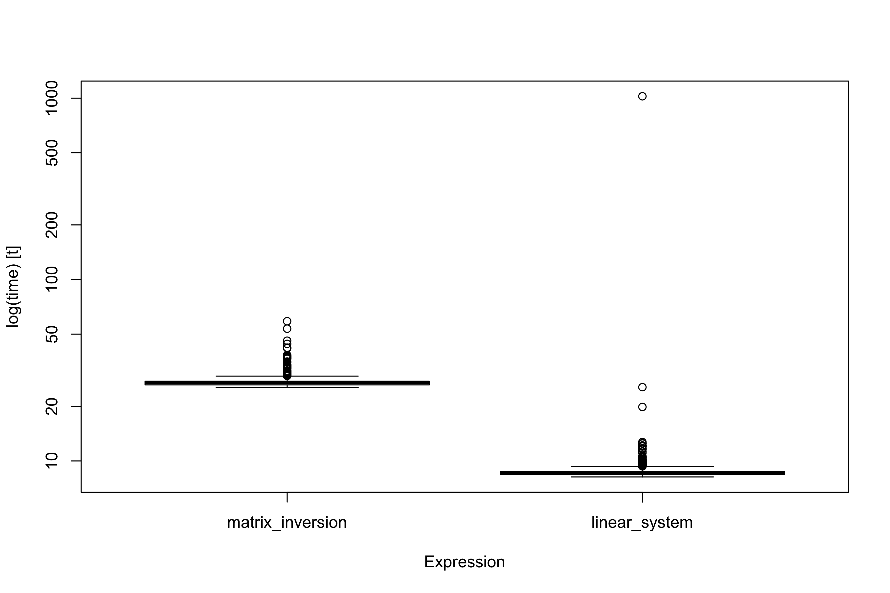
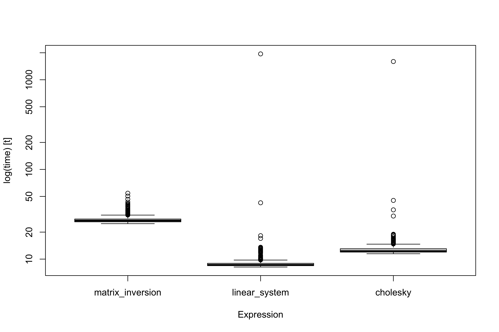
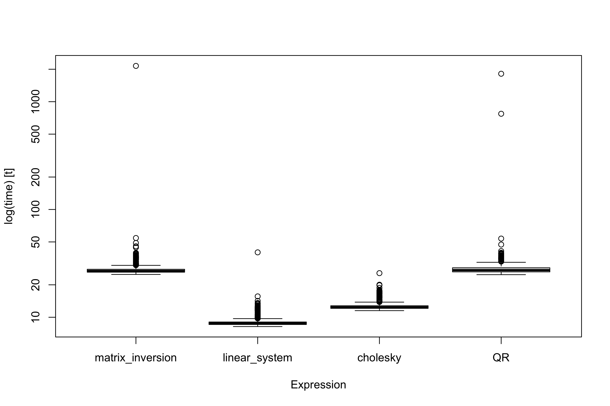

rm(list = ls())
# The dataset can be downloaded here: https://tommasorigon.github.io/datamining/data/auto.txt
auto <- read.table("../data/auto.txt", header = TRUE)
# Select the variables we need
auto <- subset(auto, select = c(city.distance, engine.size, n.cylinders, curb.weight, fuel))Lab 1 (Computations for linear models)
Data Mining - CdL CLAMSES
Homepage
This is the first lab of the course Data Mining. Code is not fully commented, because it will be executed and described in-class.
The associated code lab1.R is available online.
The auto dataset
# Create a new variable (cylinders)
auto$cylinders2 <- factor(auto$n.cylinders == 2)
# This is the final model we obtained in Unit A, after a long modelling process
m_final <- lm(log(city.distance) ~ I(log(engine.size)) + I(log(curb.weight)) + fuel + cylinders2, data = auto)
# Summary of the results
summary(m_final)
Call:
lm(formula = log(city.distance) ~ I(log(engine.size)) + I(log(curb.weight)) +
fuel + cylinders2, data = auto)
Residuals:
Min 1Q Median 3Q Max
-0.204657 -0.052425 -0.002914 0.049706 0.313410
Coefficients:
Estimate Std. Error t value Pr(>|t|)
(Intercept) 9.42293 0.48202 19.549 < 2e-16 ***
I(log(engine.size)) -0.17974 0.05130 -3.504 0.000567 ***
I(log(curb.weight)) -0.94262 0.07214 -13.066 < 2e-16 ***
fuelgas -0.35253 0.02212 -15.934 < 2e-16 ***
cylinders2TRUE -0.48143 0.05176 -9.301 < 2e-16 ***
---
Signif. codes: 0 '***' 0.001 '**' 0.01 '*' 0.05 '.' 0.1 ' ' 1
Residual standard error: 0.08961 on 198 degrees of freedom
Multiple R-squared: 0.8819, Adjusted R-squared: 0.8795
F-statistic: 369.7 on 4 and 198 DF, p-value: < 2.2e-16# Design matrix obtained from the model
X <- model.matrix(log(city.distance) ~ I(log(engine.size)) + I(log(curb.weight)) + fuel + cylinders2, data = auto)
y <- log(auto$city.distance)
# Optional. I remove the column names to improve the HTML readibility
colnames(X) <- NULL
dim(X)[1] 203 5Ordinary least squares (naïve solution)
# Least squares, the naive way.
# This provides the correct numbers in simple examples, but it is inefficient AND numerically inaccurate
solve(t(X) %*% X) %*% t(X) %*% y [,1]
[1,] 9.4229256
[2,] -0.1797370
[3,] -0.9426171
[4,] -0.3525282
[5,] -0.4814288Normal equations
# Sufficients statistics for this model
XtX <- crossprod(X)
Xty <- crossprod(X, y)
round(XtX, digits = 1) [,1] [,2] [,3] [,4] [,5]
[1,] 203.0 139.7 1428.2 183.0 4.0
[2,] 139.7 112.4 992.7 124.2 0.7
[3,] 1428.2 992.7 10056.5 1285.0 28.0
[4,] 183.0 124.2 1285.0 183.0 4.0
[5,] 4.0 0.7 28.0 4.0 4.0round(Xty, digits = 2) [,1]
[1,] 475.03
[2,] 316.21
[3,] 3333.80
[4,] 424.36
[5,] 7.85# The next algorithm make use of normal equations, but it does not know that XtX is positive definite
ols_solve <- function(X, y) {
XtX <- crossprod(X)
Xty <- crossprod(X, y)
solve(XtX, Xty)
}
ols_solve(X, y) [,1]
[1,] 9.4229256
[2,] -0.1797370
[3,] -0.9426171
[4,] -0.3525282
[5,] -0.4814288Benchmarking I
library(microbenchmark) # Needs to be installed
# Measure the speed of execution
times <- microbenchmark(
matrix_inversion = solve(t(X) %*% X) %*% t(X) %*% y,
linear_system = ols_solve(X, y), times = 1000
)
# Summary of the timings
timesUnit: microseconds
expr min lq mean median uq max neval
matrix_inversion 25.379 26.240 27.38374 26.978 27.511 58.917 1000
linear_system 8.159 8.405 9.74488 8.569 8.774 1023.729 1000boxplot(times)
Cholesky factorization
R <- chol(XtX)
round(R, 3) [,1] [,2] [,3] [,4] [,5]
[1,] 14.248 9.804 100.242 12.844 0.281
[2,] 0.000 4.040 2.446 -0.417 -0.512
[3,] 0.000 0.000 1.417 -1.059 0.776
[4,] 0.000 0.000 0.000 4.091 0.245
[5,] 0.000 0.000 0.000 0.000 1.731# Confirm that this is the appropriate Cholesky decomposition
round(XtX, 3) [,1] [,2] [,3] [,4] [,5]
[1,] 203.000 139.685 1428.233 183.000 4.000
[2,] 139.685 112.438 992.651 124.239 0.683
[3,] 1428.233 992.651 10056.513 1285.000 27.989
[4,] 183.000 124.239 1285.000 183.000 4.000
[5,] 4.000 0.683 27.989 4.000 4.000round(t(R) %*% R, 3) [,1] [,2] [,3] [,4] [,5]
[1,] 203.000 139.685 1428.233 183.000 4.000
[2,] 139.685 112.438 992.651 124.239 0.683
[3,] 1428.233 992.651 10056.513 1285.000 27.989
[4,] 183.000 124.239 1285.000 183.000 4.000
[5,] 4.000 0.683 27.989 4.000 4.000# Ordinary least squares with Cholesky
ols_chol <- function(X, y) {
XtX <- crossprod(X)
Xty <- crossprod(X, y)
R <- chol(XtX)
beta_hat <- backsolve(R, forwardsolve(t(R), Xty))
beta_hat
}
ols_chol(X, y) [,1]
[1,] 9.4229256
[2,] -0.1797370
[3,] -0.9426171
[4,] -0.3525282
[5,] -0.4814288Benchmarking II
# Measure the speed of execution
times <- microbenchmark(
matrix_inversion = solve(t(X) %*% X) %*% t(X) %*% y,
linear_system = ols_solve(X, y),
cholesky = ols_chol(X, y),
times = 1000
)
# Summary of the timings
timesUnit: microseconds
expr min lq mean median uq max neval
matrix_inversion 24.846 26.035 27.47180 26.855 28.0030 54.325 1000
linear_system 8.159 8.446 10.84356 8.610 8.9790 1942.744 1000
cholesky 11.480 11.972 14.28174 12.259 13.0585 1597.401 1000boxplot(times)
Cholesky and OLS variance
# However, the Cholesky decomposition is giving us much more.
# To get the variance of the estimates we need to compute the inverse of XtX
# Traditional inverse (not ideal)
solve(XtX) [,1] [,2] [,3] [,4] [,5]
[1,] 28.935354 2.69541474 -4.32398693 -0.43108899 1.29139234
[2,] 2.695415 0.32770163 -0.41170450 -0.03045695 0.15988406
[3,] -4.323987 -0.41170450 0.64816416 0.05649664 -0.19756110
[4,] -0.431089 -0.03045695 0.05649664 0.06095633 -0.01998578
[5,] 1.291392 0.15988406 -0.19756110 -0.01998578 0.33367682# Cholesky inverse
chol2inv(R) [,1] [,2] [,3] [,4] [,5]
[1,] 28.935354 2.69541474 -4.32398693 -0.43108899 1.29139234
[2,] 2.695415 0.32770163 -0.41170450 -0.03045695 0.15988406
[3,] -4.323987 -0.41170450 0.64816416 0.05649664 -0.19756110
[4,] -0.431089 -0.03045695 0.05649664 0.06095633 -0.01998578
[5,] 1.291392 0.15988406 -0.19756110 -0.01998578 0.33367682microbenchmark(matrix_inversion = solve(XtX), cholesky = chol2inv(R))Unit: nanoseconds
expr min lq mean median uq max neval
matrix_inversion 5699 5863 6358.69 5986 6150 27224 100
cholesky 697 779 911.84 820 861 8282 100QR factorization
# This specific linear regression model is fairly well-conditioned
# Any method (even the naive ones) are going to work just fine
kappa(t(X) %*% X, exact = TRUE)[1] 314590.3# Note that this coincide with:
kappa(X, exact = TRUE)^2[1] 314590.3# Re-implementation via Gram-Schmidt
factorizationQR <- function(X) {
p <- ncol(X)
n <- nrow(X)
Q <- matrix(0, n, p)
R <- matrix(0, p, p)
for (j in 1:p) {
Zj <- X[, j]
if (j > 1) {
for (k in 1:(j - 1)) {
R[k, j] <- crossprod(Q[, k], X[, j])
Zj <- Zj - R[k, j] * Q[, k]
}
}
R[j, j] <- sqrt(crossprod(Zj))
Q[, j] <- Zj / R[j, j]
}
return(list(Q = Q, R = R))
}# Let us compute the QR factorization
QR <- factorizationQR(X)
# This is an orthogonal matrix
round(crossprod(QR$Q), 3) [,1] [,2] [,3] [,4] [,5]
[1,] 1 0 0 0 0
[2,] 0 1 0 0 0
[3,] 0 0 1 0 0
[4,] 0 0 0 1 0
[5,] 0 0 0 0 1# This coincide with the Cholesky
round(QR$R, 3) [,1] [,2] [,3] [,4] [,5]
[1,] 14.248 9.804 100.242 12.844 0.281
[2,] 0.000 4.040 2.446 -0.417 -0.512
[3,] 0.000 0.000 1.417 -1.059 0.776
[4,] 0.000 0.000 0.000 4.091 0.245
[5,] 0.000 0.000 0.000 0.000 1.731round(R, 3) [,1] [,2] [,3] [,4] [,5]
[1,] 14.248 9.804 100.242 12.844 0.281
[2,] 0.000 4.040 2.446 -0.417 -0.512
[3,] 0.000 0.000 1.417 -1.059 0.776
[4,] 0.000 0.000 0.000 4.091 0.245
[5,] 0.000 0.000 0.000 0.000 1.731ols_QR <- function(X, y) {
qr_obj <- factorizationQR(X)
Q <- qr_obj$Q
R <- qr_obj$R
Qty <- crossprod(Q, y)
beta_hat <- backsolve(R, Qty)
beta_hat
}
ols_QR(X, y) [,1]
[1,] 9.4229256
[2,] -0.1797370
[3,] -0.9426171
[4,] -0.3525282
[5,] -0.4814288# Be careful, here pivoting is performed
# This means the QR might be different with that of factorizationQR
QR_obj <- qr(X)ols_QR <- function(X, y) {
qr_obj <- qr(X)
qr.coef(qr_obj, y)
}
ols_QR(X, y)[1] 9.4229256 -0.1797370 -0.9426171 -0.3525282 -0.4814288Benchmark III
# Measure the speed of execution
times <- microbenchmark(
matrix_inversion = solve(t(X) %*% X) %*% t(X) %*% y,
linear_system = ols_solve(X, y),
cholesky = ols_chol(X, y),
QR = ols_QR(X, y),
times = 1000
)
# Summary of the timings
timesUnit: microseconds
expr min lq mean median uq max neval
matrix_inversion 24.969 26.199 29.786049 26.896 27.8800 2147.580 1000
linear_system 8.200 8.569 9.105608 8.774 9.0405 40.016 1000
cholesky 11.521 12.095 12.798560 12.382 12.7920 25.666 1000
QR 24.846 26.363 30.550863 27.347 28.7820 1816.915 1000boxplot(times)
# Estimated coefficients
qr.coef(QR_obj, y)[1] 9.4229256 -0.1797370 -0.9426171 -0.3525282 -0.4814288# Predicted values
head(predict(m_final)) 1 2 3 4 5 6
2.286616 2.286616 2.161938 2.399751 2.181562 2.293801 head(qr.fitted(QR_obj, y))[1] 2.286616 2.286616 2.161938 2.399751 2.181562 2.293801# Residuals
head(residuals(m_final)) 1 2 3 4 5 6
-0.09742398 -0.09742398 -0.07279323 -0.07706922 -0.14659471 -0.20465668 head(qr.resid(QR_obj, y))[1] -0.09742398 -0.09742398 -0.07279323 -0.07706922 -0.14659471 -0.20465668# Influence points
head(influence(m_final)$hat) 1 2 3 4 5 6
0.005964967 0.005964967 0.008907262 0.006511439 0.008928448 0.008484793 head(rowSums(qr.Q(QR_obj)^2))[1] 0.005964967 0.005964967 0.008907262 0.006511439 0.008928448 0.008484793# Inverse of XtX
solve(XtX) [,1] [,2] [,3] [,4] [,5]
[1,] 28.935354 2.69541474 -4.32398693 -0.43108899 1.29139234
[2,] 2.695415 0.32770163 -0.41170450 -0.03045695 0.15988406
[3,] -4.323987 -0.41170450 0.64816416 0.05649664 -0.19756110
[4,] -0.431089 -0.03045695 0.05649664 0.06095633 -0.01998578
[5,] 1.291392 0.15988406 -0.19756110 -0.01998578 0.33367682chol2inv(qr.R(QR_obj)) [,1] [,2] [,3] [,4] [,5]
[1,] 28.935354 2.69541474 -4.32398693 -0.43108899 1.29139234
[2,] 2.695415 0.32770163 -0.41170450 -0.03045695 0.15988406
[3,] -4.323987 -0.41170450 0.64816416 0.05649664 -0.19756110
[4,] -0.431089 -0.03045695 0.05649664 0.06095633 -0.01998578
[5,] 1.291392 0.15988406 -0.19756110 -0.01998578 0.33367682Numerical precision of QR
a <- 1e-7
X <- cbind(c(1, a, 0), c(1, 0, a))
y <- c(1, 0, -1)manual <- rbind((1 - a) / (-2 * a^2 - a^4) + (-1 - a^2) / (-2 * a^2 - a^4), 1 / (-2 * a^2 - a^4) + ((1 - a) * (-1 - a^2)) / (-2 * a^2 - a^4))
print(ols_solve(X, y), digits = 12) [,1]
[1,] 5004000.08333
[2,] -5003999.08333print(ols_chol(X, y), digits = 12) [,1]
[1,] 5060224.80337
[2,] -5060223.80337print(ols_QR(X, y), digits = 12)[1] 5000000.5 -4999999.5print(manual, digits = 12) [,1]
[1,] 5000000.5
[2,] -4999999.5Iterative methods
The drivers dataset
# Additional information
# Source of the data: https://dati.mit.gov.it/hfs/patenti_Lombardia.csv
# Documentation: http://dati.mit.gov.it/catalog/dataset/patenti
# Author: Direzione generale per la motorizzazione - Div7 - Centro elaborazione dati motorizzazione
# Last update: 21 December 2022, 17:16 (UTC+01:00)
# Created: 20 February 2022, 18:21 (UTC+01:00)
# Temporal extension (end) 31 December 2019
library(readr)
drivers <- read_csv("../data/drivers2.csv", n_max = 10000)# Design matrix obtained from the model
X <- model.matrix(hazard ~ poly(age, 10) + poly(experience, 10) + habilit + gender + city, data = drivers)
y <- drivers$hazard
dim(X)[1] 10000 33Benchmark
# Measure the speed of execution
times <- microbenchmark(
matrix_inversion = solve(t(X) %*% X) %*% t(X) %*% y,
linear_system = ols_solve(X, y),
cholesky = ols_chol(X, y),
QR = ols_QR(X, y),
times = 50
)
# Summary of the timings
timesUnit: milliseconds
expr min lq mean median uq max
matrix_inversion 8.149898 8.312299 8.709106 8.405451 8.648745 10.712234
linear_system 6.844089 6.876602 6.925441 6.899665 6.961103 7.162249
cholesky 6.841916 6.867992 6.926273 6.889517 6.961718 7.330513
QR 9.150462 9.260629 10.622507 9.922861 10.766846 39.465247
neval
50
50
50
50Recursive estimates
library(biglm)
drivers_chunk1 <- read_csv("../data/drivers2.csv",
n_max = 100000, skip = 0, col_names = TRUE)
name_cols <- colnames(drivers_chunk1)m_big <- biglm(hazard ~ poly(age, 10) + poly(experience, 10) + habilit + gender + city,
data = drivers_chunk1)
summary(m_big)Large data regression model: biglm(hazard ~ poly(age, 10) + poly(experience, 10) + habilit +
gender + city, data = drivers_chunk1)
Sample size = 100000
Coef (95% CI) SE p
(Intercept) 0.5025 0.4790 0.5260 0.0118 0.0000
poly(age, 10)1 -32.3565 -38.9120 -25.8010 3.2777 0.0000
poly(age, 10)2 -8.8621 -14.9682 -2.7561 3.0530 0.0037
poly(age, 10)3 3.5942 -1.5506 8.7391 2.5724 0.1624
poly(age, 10)4 -0.5864 -4.5715 3.3986 1.9925 0.7685
poly(age, 10)5 0.5780 -3.0051 4.1612 1.7916 0.7470
poly(age, 10)6 0.7048 -2.6491 4.0587 1.6770 0.6743
poly(age, 10)7 -1.2556 -4.4928 1.9817 1.6186 0.4379
poly(age, 10)8 -2.2750 -5.1402 0.5903 1.4326 0.1123
poly(age, 10)9 1.1176 -1.3892 3.6244 1.2534 0.3726
poly(age, 10)10 2.1699 -0.0412 4.3810 1.1055 0.0497
poly(experience, 10)1 -57.5573 -64.8101 -50.3044 3.6264 0.0000
poly(experience, 10)2 65.4595 59.6770 71.2420 2.8913 0.0000
poly(experience, 10)3 -42.9206 -47.5879 -38.2534 2.3336 0.0000
poly(experience, 10)4 32.0091 28.2193 35.7988 1.8949 0.0000
poly(experience, 10)5 -20.9381 -24.2519 -17.6242 1.6569 0.0000
poly(experience, 10)6 8.1923 4.7802 11.6045 1.7061 0.0000
poly(experience, 10)7 -0.2951 -3.4603 2.8702 1.5826 0.8521
poly(experience, 10)8 -4.6204 -7.7604 -1.4804 1.5700 0.0033
poly(experience, 10)9 4.3903 1.5296 7.2511 1.4304 0.0021
poly(experience, 10)10 -1.7464 -4.4530 0.9602 1.3533 0.1969
habilitS 0.1616 0.1392 0.1839 0.0112 0.0000
genderM 0.3058 0.2915 0.3201 0.0071 0.0000
cityBRESCIA 0.1511 0.1207 0.1814 0.0152 0.0000
cityCOMO 0.0259 -0.0008 0.0526 0.0133 0.0520
cityCREMONA 0.1309 0.0670 0.1949 0.0320 0.0000
cityLECCO -0.0243 -0.0593 0.0108 0.0175 0.1659
cityLODI 0.0582 0.0227 0.0938 0.0178 0.0010
cityMANTOVA 0.2532 0.1771 0.3293 0.0381 0.0000
cityMILANO 0.1471 0.1234 0.1709 0.0119 0.0000
cityMONZA E DELLA BRIANZA -0.0109 -0.0444 0.0227 0.0168 0.5177
cityPAVIA 0.2479 0.2115 0.2843 0.0182 0.0000
citySONDRIO -0.0613 -0.1129 -0.0097 0.0258 0.0174
cityVARESE 0.0150 -0.0153 0.0453 0.0151 0.3221rm(drivers_chunk1)
gc() # Free unused R memory used (Mb) gc trigger (Mb) limit (Mb) max used (Mb)
Ncells 1000725 53.5 1779550 95.1 NA 1693400 90.5
Vcells 2276108 17.4 14503427 110.7 16384 18129283 138.4drivers_chunk2 <- read_csv("../data/drivers2.csv",
n_max = 100000, skip = 100000, col_names = FALSE)
colnames(drivers_chunk2) <- name_colsm_big <- update(m_big, drivers_chunk2)
summary(m_big)Large data regression model: biglm(hazard ~ poly(age, 10) + poly(experience, 10) + habilit +
gender + city, data = drivers_chunk1)
Sample size = 200000
Coef (95% CI) SE p
(Intercept) 0.4482 0.4308 0.4655 0.0087 0.0000
poly(age, 10)1 -34.1755 -37.9337 -30.4174 1.8791 0.0000
poly(age, 10)2 -5.0181 -8.0743 -1.9619 1.5281 0.0010
poly(age, 10)3 -2.7864 -5.4427 -0.1300 1.3282 0.0359
poly(age, 10)4 7.3606 5.0422 9.6789 1.1592 0.0000
poly(age, 10)5 -5.9304 -8.2328 -3.6281 1.1512 0.0000
poly(age, 10)6 1.8641 -0.3209 4.0490 1.0925 0.0880
poly(age, 10)7 1.9233 -0.2182 4.0647 1.0707 0.0725
poly(age, 10)8 -4.2157 -6.1595 -2.2719 0.9719 0.0000
poly(age, 10)9 1.3554 -0.2981 3.0090 0.8268 0.1011
poly(age, 10)10 1.4548 -0.1152 3.0248 0.7850 0.0638
poly(experience, 10)1 -28.7063 -32.8579 -24.5546 2.0758 0.0000
poly(experience, 10)2 31.0959 28.2521 33.9398 1.4219 0.0000
poly(experience, 10)3 -15.9644 -18.2943 -13.6345 1.1649 0.0000
poly(experience, 10)4 9.4349 7.2119 11.6579 1.1115 0.0000
poly(experience, 10)5 -4.4924 -6.6014 -2.3834 1.0545 0.0000
poly(experience, 10)6 0.8428 -1.3544 3.0401 1.0986 0.4430
poly(experience, 10)7 -1.8668 -3.8951 0.1616 1.0142 0.0657
poly(experience, 10)8 0.6580 -1.3855 2.7015 1.0217 0.5196
poly(experience, 10)9 -1.0719 -3.0598 0.9159 0.9939 0.2808
poly(experience, 10)10 0.1440 -1.7450 2.0330 0.9445 0.8788
habilitS 0.1873 0.1711 0.2034 0.0081 0.0000
genderM 0.3127 0.3024 0.3230 0.0052 0.0000
cityBRESCIA 0.1237 0.1029 0.1446 0.0104 0.0000
cityCOMO 0.0437 0.0224 0.0651 0.0107 0.0000
cityCREMONA 0.0736 0.0432 0.1040 0.0152 0.0000
cityLECCO -0.0201 -0.0477 0.0075 0.0138 0.1448
cityLODI 0.0838 0.0542 0.1135 0.0148 0.0000
cityMANTOVA 0.1884 0.1586 0.2182 0.0149 0.0000
cityMILANO 0.1346 0.1170 0.1522 0.0088 0.0000
cityMONZA E DELLA BRIANZA -0.0356 -0.0593 -0.0120 0.0118 0.0026
cityPAVIA 0.2157 0.1911 0.2403 0.0123 0.0000
citySONDRIO -0.0656 -0.1056 -0.0256 0.0200 0.0010
cityVARESE 0.0200 -0.0024 0.0424 0.0112 0.0748rm(drivers_chunk2)
gc() # Free unused R memory used (Mb) gc trigger (Mb) limit (Mb) max used (Mb)
Ncells 1001361 53.5 1779550 95.1 NA 1693400 90.5
Vcells 2277934 17.4 14639441 111.7 16384 18280203 139.5drivers_chunk3 <- read_csv("../data/drivers2.csv",
n_max = 100000, skip = 200000, col_names = FALSE)
colnames(drivers_chunk3) <- name_colsm_big <- update(m_big, drivers_chunk3)
summary(m_big)Large data regression model: biglm(hazard ~ poly(age, 10) + poly(experience, 10) + habilit +
gender + city, data = drivers_chunk1)
Sample size = 300000
Coef (95% CI) SE p
(Intercept) 0.6383 0.6243 0.6523 0.0070 0.0000
poly(age, 10)1 -27.8917 -31.1660 -24.6175 1.6371 0.0000
poly(age, 10)2 -10.1502 -12.6710 -7.6294 1.2604 0.0000
poly(age, 10)3 -1.7411 -3.9597 0.4776 1.1093 0.1165
poly(age, 10)4 4.1168 2.2509 5.9828 0.9330 0.0000
poly(age, 10)5 -1.1767 -3.0531 0.6998 0.9382 0.2098
poly(age, 10)6 0.3420 -1.4237 2.1078 0.8829 0.6985
poly(age, 10)7 -0.1307 -1.8377 1.5763 0.8535 0.8783
poly(age, 10)8 -2.5113 -4.0484 -0.9741 0.7686 0.0011
poly(age, 10)9 1.5779 0.2341 2.9217 0.6719 0.0189
poly(age, 10)10 1.8249 0.5381 3.1117 0.6434 0.0046
poly(experience, 10)1 -31.8599 -35.4156 -28.3041 1.7779 0.0000
poly(experience, 10)2 38.1924 35.8051 40.5797 1.1937 0.0000
poly(experience, 10)3 -25.1551 -27.1025 -23.2076 0.9737 0.0000
poly(experience, 10)4 16.2344 14.4249 18.0439 0.9047 0.0000
poly(experience, 10)5 -6.6190 -8.3225 -4.9154 0.8518 0.0000
poly(experience, 10)6 -3.0139 -4.7900 -1.2378 0.8881 0.0007
poly(experience, 10)7 6.6486 5.0053 8.2918 0.8216 0.0000
poly(experience, 10)8 -8.7493 -10.4128 -7.0857 0.8318 0.0000
poly(experience, 10)9 5.1917 3.5950 6.7883 0.7983 0.0000
poly(experience, 10)10 -2.3915 -3.9164 -0.8666 0.7624 0.0017
habilitS 0.0420 0.0295 0.0544 0.0062 0.0000
genderM 0.3629 0.3544 0.3713 0.0042 0.0000
cityBRESCIA 0.1227 0.1055 0.1399 0.0086 0.0000
cityCOMO -0.0256 -0.0440 -0.0072 0.0092 0.0053
cityCREMONA 0.0747 0.0494 0.1000 0.0126 0.0000
cityLECCO -0.0529 -0.0765 -0.0292 0.0118 0.0000
cityLODI 0.0188 -0.0071 0.0447 0.0129 0.1456
cityMANTOVA 0.1800 0.1556 0.2044 0.0122 0.0000
cityMILANO 0.1209 0.1064 0.1354 0.0073 0.0000
cityMONZA E DELLA BRIANZA -0.0162 -0.0350 0.0027 0.0094 0.0858
cityPAVIA 0.1737 0.1530 0.1944 0.0103 0.0000
citySONDRIO -0.0412 -0.0738 -0.0086 0.0163 0.0116
cityVARESE 0.0176 -0.0008 0.0360 0.0092 0.0558print(object.size(m_big), units = "KB")18.8 Kb